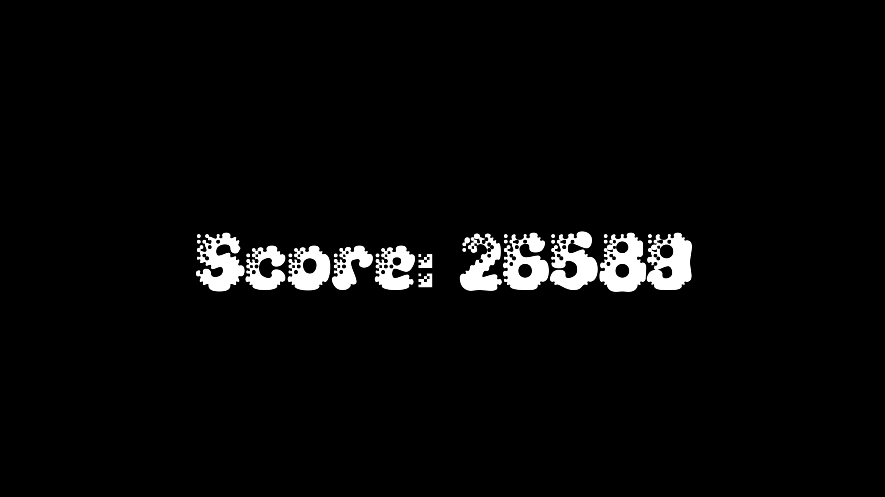

Bubble Pop
Click here for the Repository!Introduction
Bubble Pop was a simple game made in 48 hours for the Global Game Jam 2025. The aim of the game is to score as high as possible before the number of bubbles on your screen becomes too many to handle! Pop bubbles by typing the letter shown on the bubble.
I had a few main goals for this project. My main goal was to see how far my skills in C++ had come. I also wanted to learn how to use CMake and I also wanted to explore using audio in an application. I am quite happy with how it turned out. However, I didn't have time to explore using audio in the game due to the time restriction.
The Game
Title Screen
Upon launching the game, the player is greeted with the title screen. Pretty self explanatory. During the creation, I was using a font that looked a lot more like bubbles but the license for the font prevented distribution. The font used is freeware.
Gameplay
This is what the game looks like during the game. The bulk of the screen is taken up by bubbles. Only the bubble which is the oldest has the letter displayed on it. It also has a different color to make it more obvious. The bottom left of the screen shows the score for the player, and the bottom right shows the current score multiplier.
A bubble is popped when the key displayed on the bubble is pressed. Each bubble is worth 100 points and each consecutive correct pop increases the score multiplier by 0.1. The score multiplier resets after 1 second or after an incorrect key is pressed. Upon reaching 32 active bubbles, the game terminates.
At the beginning of the game, bubbles spawn once every 2 seconds. However, after a bubble is spawned, the rate is decreased by 1% of the current rate. This means the game starts off quite slow but eventually speeds up fast.
Score Screen
This is the end game screen. It just displays the score and then the user can press ESCAPE to quit.
Technical Experience
The project was written in C++ using the Simple and Fast Multimedia Library (SFML) 3.0. This was the first time I had used SFML, and found it to be similar to Pygame. However, I also found it incredibly frustrating. For example, setting a window to fullscreen would require adding a window style flag of None to the function call, while I found in older versions of SFML, Fullscreen was a window style and had since been replaced. There were numerous small things like this that I found odd and rather confusing.
I also felt like rendering text was a battle. At one point I was modifying a brand new text object and a text object located in a completely different part of my program was being updated. There was no link between the two objects, other than the member name was the same.
My experience using CMake for the first time was okay. At first I was using the GUI and on the first "build", everything worked. Unfortunately, I didn't know this at the time (as visual studio was throwing an error) so I restarted (from scratch). However, after this CMake could no longer build the project (was throwing an error). In the end I switched to using console commands and everything ended up working but this caused a lot of confusion.
One interesting thing I learnt from using CMake to build the SMFL project was that you could fetch git repositories as dependencies and integrate them directly into your build line, removing the need to download dependencies manually. I can see this would be quite useful.
Overall, I enjoyed the project. I felt like my knowledge of C++ was enough to complete the task effectively. However, I will most likely not be using SFML 3.0 again. I have used other libraries that are more intuative.